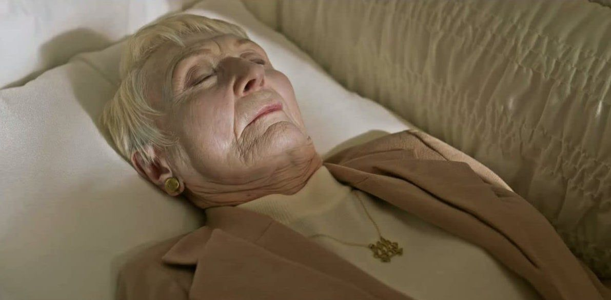
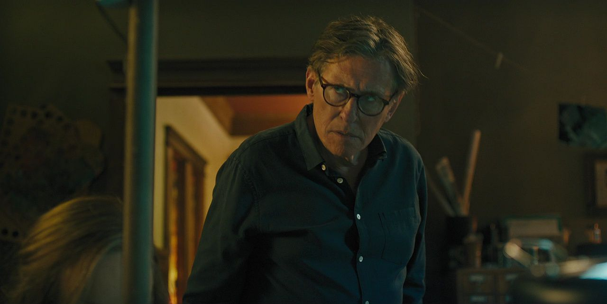
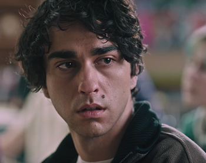
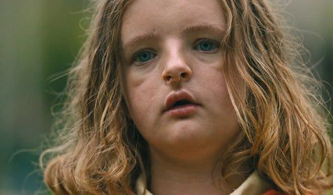
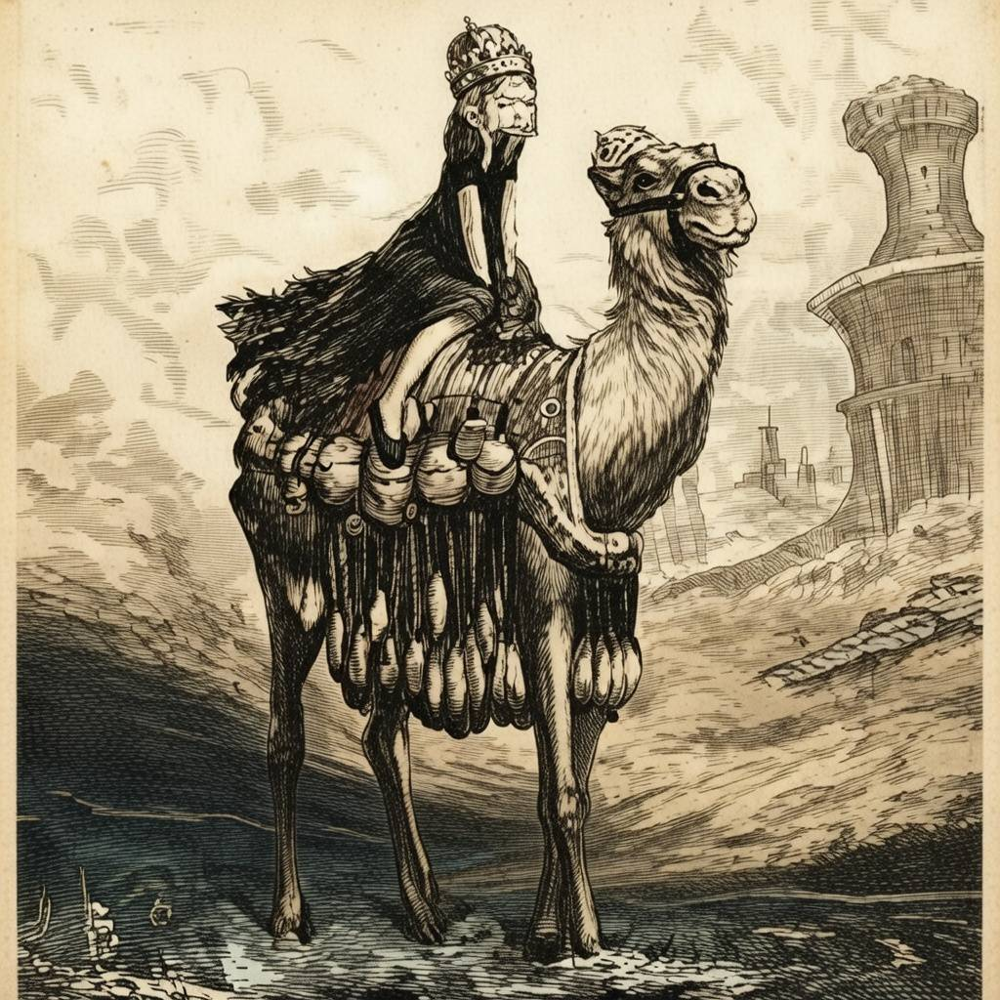
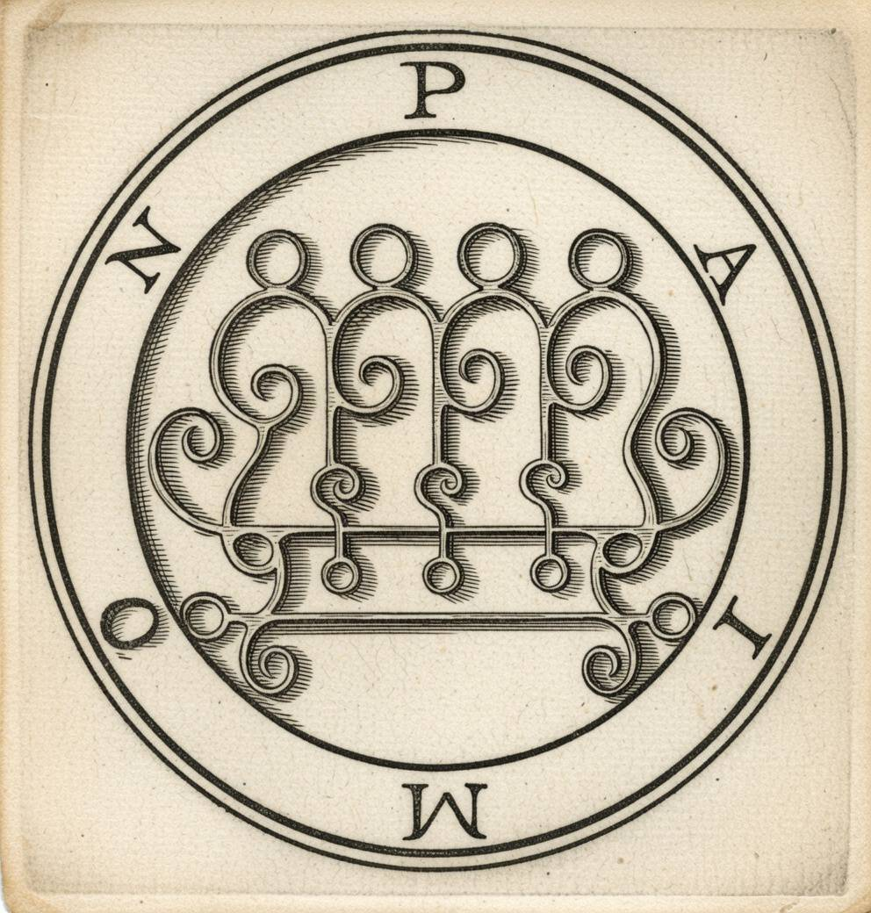

ヘレディタリー
継承
【物語のあらすじ】
祖母・エレンの死をきっかけに、
グラハム家に静かに忍び寄る
「逃げ場のない絶望」。
平穏を装っていた家族の絆は、
凄惨な事故を境に、無惨に
引き裂かれていく。
屋根裏で見つけた不気味な遺品。
兄ピーターを襲う不可解な現象。
そしてチャーリーの奇妙な行動…。
それは、数十年前から綿密に仕組まれていた「祝祭」へのカウントダウンだった。
代々受け継がれるのは、血筋か、狂気か、それとも――。
【グラハム家の家系図と教団の陰謀】




【物語の起承転結 - 要約】
※各項目をクリックすると、物語のネタバレ・あらすじが表示されます。
起 不可解な葬儀と遺された影
グラハム家の祖母エレンが78歳で亡くなった。葬儀の際、娘のアニーは弔辞で母との複雑な関係を吐露する。四十九日も経たぬうちに、エレンの墓が荒らされ、家の中では奇妙な光や物音が目撃され始める。末娘のチャーリーは、死んだ鳩の首をハサミで切り取るなど、異常な行動を加速させていく。アニーは屋根裏部屋で、母が遺した「ある紋章」と、不可解な降霊術の本を見つけるのだった。
承 惨劇の夜と降霊の誘い
長男ピーターがパーティーへ行く際、無理やり同行させられたチャーリー。そこでナッツ入りのチョコレートケーキを食べてしまい、重度のアレルギー発作を起こす。急いで病院へ向かう車中、窓から顔を出したチャーリーの首が電柱に激突し、切断されるという最悪の事故が発生。家族は深い絶望に沈む。アニーは自助グループで出会った女性ジョーンに誘われ、死んだチャーリーを呼び出すための降霊術を教わってしまう。
転 暴かれる狂気と教団の正体
アニーが自宅で降霊術を行うと、家族の制止を振り切って「何者か」が憑依し始める。家中に響く「コッ」という音。ピーターは学校で自らの顔を机に叩きつけ、異様な痙攣を起こす。アニーは屋根裏で見つけた母の遺体が、首を切断された状態であることに気づき、さらにジョーンが、祖母エレンが率いている教団の一員であったことを知る。全ては祖母エレンが仕組んだ、悪魔パイモンを招き入れるための計画だったのだ。
結 新たなる王の継承（完全ネタバレ）
完全に取り憑かれたアニーは自らの首をピアノ線で切り落とし、スティーヴは焼死。唯一生き残ったと思われたピーターだったが、屋根裏の窓から飛び降り転落死。しかし、突如起き上がり導かれるようにツリーハウスへ登る。そこには首のない家族の遺体と、跪く教団員たちがいた。ピーターの体にパイモンの魂が憑依し、彼は「地獄の王」として君臨する。教団員たちが「王を讃えよ！」と叫ぶ中、地獄のような祝祭とともに物語は幕を閉じる。
【超特大ネタバレ注意】真実の系譜を開く
物語の全容と儀式の伏線を網羅しています。閲覧は自己責任でお願いします。
考察を読む [+]
物語の全容と儀式の伏線を網羅しています。閲覧は自己責任でお願いします。
【因果の系譜：張り巡らされた伏線と考察】
エレンの「男の子」への執着と兄の自殺
アニーの兄は「母(エレン)が自分の中に誰かを入れようとしている」と訴え、16歳で自殺しました。これはエレンがかつて自分の息子をパイモンの器にしようとして失敗した事実を示しています。その執念は孫のピーターへと引き継がれ、母アニーがピーターを祖母エレンから遠ざけようとしたのは、この惨劇を繰り返さないための必死の抵抗でした。
富と知恵の代償：なぜパイモンなのか？
エレンが率いる教団がパイモンを召喚しようとしたのは、悪魔パイモンが「富、知恵、そして全ての秘密を明かす力」を授けると信じられていたからです。教団員たちがエレンの遺体に跪き、執拗に儀式を完遂させようとしたのは、王を降臨させることで自分たちが「選ばれし者」として現世的な栄華を得るためでした。エレンにとって家族の命は、その莫大な報酬を得るための「ただの生贄」に過ぎなかったのです。
セラピーとしてのミニチュア、本能としての夢遊病
アニーが没頭するミニチュアは、仕事としてだけではなく、現実を客観視し、落ち着きを取り戻そうとする心のセラピー（箱庭療法）という役割もありました。また、彼女の夢遊病による「無理心中未遂」は、悪魔の器にされる運命から息子を救おうとした、母性による最後の防衛本能だったと考えられます。「焼いて浄化する」ことだけが、呪いの連鎖を断ち切る唯一の手段だと、母としての本能が悟っていたのではないでしょうか。
ナッツ入りのチョコレートケーキ
チャーリーが、なぜナッツ入りのチョコレートケーキを口にしたのか。これは教団が信仰している「パイモン」という悪魔の特徴が関わっていると考えられます。パイモンは「召喚者・術者に服従するように他人の行動を仕向ける」ことができるためです。教団が彼女を「窓から顔を出さざるを得ない状況」へ追い込み、儀式に不可欠な「首の切断」を確実に実行するための精密な罠だったと言えるでしょう(電柱にパイモンの紋章があらかじめ残されていたため)。事故に見せかけたこの暗殺により、パイモンは「仮住まい」であったチャーリーから、本命の器(ピーター)へと乗り換える準備を整えます。
葬儀に現れなかったジョーンの正体
エレンの葬儀にすら顔を出さなかったジョーンは、アニーが絶望の淵に立たされるのを待ち、自助グループの帰りに「偶然」を装って接触しました。彼女の温かな励ましはすべて、アニーを絶望から救うためではなく、降霊術という儀式へ引きずり込み、家の中にパイモンを招き入れさせるための冷徹な演技だったのです。
教室の自傷：パイモンによる肉体の強制奪取
ピーターが突然机に顔面を打ち付け、痙攣を起こしたのは、パイモンが彼の肉体の主導権を強引に奪おうとした「拒絶反応」です。自身の意思とは無関係に体が動く絶望、そして窓の外で見守る教団員の視線。これらは全て、ピーターの魂を肉体から追い出し、パイモンという「新しい主」を迎え入れるための、最も暴力的で不可避な儀式の一環でした。
呪いのすり替え：なぜ夫が焼死したのか
アニーは自らの死を覚悟してノートを暖炉へ投じましたが、実際に火に包まれたのは傍観していた夫スティーヴでした。当初はアニーに火がついたことから、彼女の命とノートはリンクしていましたが、スティーヴが儀式を「妄望」と否定し、警察を呼ぼうとした（拒絶した）瞬間、呪いの矛先が彼へと切り替わったと考えられます。教団にとって邪魔な「現実主義者」を排除し、同時に愛する夫を自らの手で殺めたという極限の罪悪感をアニーに植え付けることで、彼女の精神を完全に破壊する最後の一撃となったのです。
全裸の狂信者たち：幻覚ではない「実在」の恐怖
ピーターが学校や自宅で目撃した不気味な人影の多くは、悪魔ではなく実在する教団員たちです。彼らはエレンが仕組んだ「王の継承」を最前列で見届けるため、そしてピーターを逃がさずツリーハウスへ追い込むために、全裸(儀式的な姿)という異様な姿で待ち構えていました。超自然的な呪いと、狂信的な人間による物理的な包囲――その両面作戦が、ピーターの精神を完膚なきまでに叩き潰したのです。
「空の器」の完成と王の君臨
家族の死と、アニーの凄惨な最期を見せつけられたことで、ピーターの心は完全に破壊されました。そして、窓からの転落死によって「空の器」となった彼の肉体に、青い光（パイモン）が吸い込まれます。ミニチュアの中で駒を動かすように、エレンが数十年かけて仕組んだ「王の継承」が、ここに完成したのです。
【総括：抗えぬ継承の記録】
本作が突きつけるのは「自由意志の完全な敗北」である。 アニーが執拗に作り続けるミニチュアの世界と同様、一家の運命はカルト教団という「作り手」の手によって、最初からパイモンの器となるべく配置されていた。
「家族」とは、愛情の場所であると同時に、呪われた血筋や精神的な病を強制的に引き継がせる「逃げ場のない檻」でもある。 柱に刻まれた紋章も、避けられなかった事故も、すべては必然。 我々が自分の人生を自分のものだと信じていること自体が、最大の悲劇的な喜劇であることを、この映画は嘲笑と共に伝えている。
結論：人生は最初から決められた脚本通りに進んでいる。
抗うことはできない。
【伝承：主天使の王パイモン】

古書に描かれたパイモン

パイモンの紋章（シジル）
Paimon / パイモン
[由来] 17世紀の魔術書『ゴエティア』に記された第9番目の王。ルシファーに最も忠実な西方の王の一人。
[特徴] 女性のように美しい顔をした男性。召喚時には耳を劈く咆哮をあげるとされる。
[権能] あらゆる知恵と秘密を授け、富を与える。また人の精神を自在に操る力を持つ。
※劇中の随所にこの紋章が刻印されており、一家が逃げ場のない契約の中にいたことを示唆している。
【なぜ「3体の首なし」なのか】
1. 魔術的完成：王を支える「三位一体」の供回り
歴史的な魔術書『ゴエティア』において、王パイモンは独りで現れるのではなく、2人の家臣（アバリィとベバル）を伴って降臨すると記されています。 教団はこの伝承を現代に再現するため、エレン（過去）、アニー（現在）、チャーリー（未来/器の失敗作）という三世代の女性を「随従者」として捧げました。 3人の首を切り落とし、新しき王（ピーター）の前に跪かせることで、地獄の秩序を現世に持ち込む「逆・聖三位一体」を完成させたのです。
2. 逆転の美学：聖人伝説と逆さ十字のロジック
キリスト教の伝承には、斬首されても自らの首を持って歩き、信仰を証明した聖人（ケファロフォール）の物語があります。これは「死に対する魂の勝利」を象徴する聖なる奇跡です。 しかし教団は、このイメージを徹底的に反転（サブバージョン）させました。
首を持つ姿
信仰による死への勝利
自我の喪失と悪魔への隷属
逆さ字
聖ペトロの謙虚な殉教
神への叛逆と救済の拒絶
【カルト崇拝・黒魔術が好きな方へ】
ミッドサマー
『ヘレディタリー』と同じ監督。夜が来ない村での祝祭が、いつの間にか逃げ場のない惨劇へ。太陽の下で行われる不気味な儀式は、ヘレディタリーとはまた違った「明るい地獄」を味わえます。
インシディアス
引っ越し先で起きる怪異、そして昏睡状態の息子。原因は「家」ではなく「子供」にあった……。悪魔が肉体を奪おうとする描写や、あちら側の世界のビジュアルが非常に不気味な傑作シリーズです。
ジェーン・ドウの解剖
身元不明の美女の遺体を解剖していくうちに、遺体の内部から「あり得ないもの」が次々と発見される。医学と魔術が交差する、閉鎖空間での恐怖。ヘレディタリーの「歴史的・呪術的背景」が好きな人に最適です。
女神の継承
タイの祈祷師一族を襲う、血筋の呪い。ある日、親戚の娘が「何者か」に憑依され、豹変していく様子をカメラが追う。ヘレディタリーと同じく『血筋からは逃げられない』というテーマを、凄まじいボルテージで描き切る傑作です。
この絶望を、その目で確かめる
現在、以下のプラットフォームで視聴可能です。※配信状況は時期により異なります。
手元に置いておきたい方は、豪華版Blu-rayもおすすめ。メイキングや未公開シーンに真実が隠されているかもしれません。